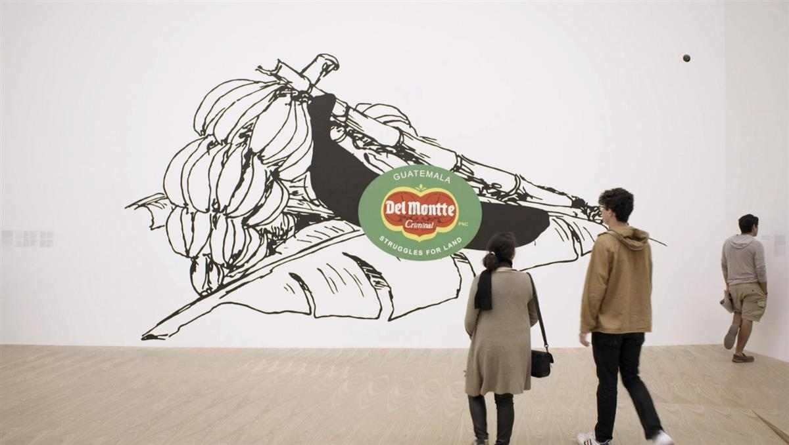

Production still from the 'Art in the Twenty-First Century' Season 8 episode, 'Mexico City,' 2016. © Art21, Inc. 2016.
‘Art Can Impact Society’: Watch How Artist Minerva Cuevas Uses Her Creative Practice to Trigger Real-World Change
As part of a collaboration with Art21, hear news-making artists describe their inspirations in their own words.
Caroline Goldstein, March 9, 2023
For artist Minerva Cuevas, every object is the potential foundation of an artwork, even if you don’t realize it at first.
A native of Mexico City, the artist’s practice is rooted in socially engaged activism that draws attention to both worldwide and more local political and social issues such as food shortages, rampant capitalism, fair labor practices, and the detrimental effects of climate change. Much of Cuevas’s work takes the form of small interventions to upset the larger system she is critiquing; her self-proclaimed most important project to date is the ongoing non-profit Mejor Vida Corp, or Better Life Corporation, which is comprised in part of acts she tracks as a “cartography of resistance.”
In an exclusive interview filmed as part of Art21’s flagship series Art in the Twenty-First Century, Cuevas explained how her conceptually rooted practice has real-world consequences.
“Symbolic actions” like giving away subway tickets, student I.D. cards, or altering the barcode at the grocery store “created this sense of freedom that actions are possible” she said. “You empower people… this little disturbance in the system, no? It’s finding the gap in the bureaucratic process.” From there, Cuevas began to take a larger role in drawing public attention to how major corporations and bureaucratic systems harm society in many ways.

Production still from the “Art in the Twenty-First Century” Season 8 episode, “Mexico City,” 2016. © Art21, Inc. 2016.For the project Del Montte—Bananeras (2003/10), the artist intentionally changed the spelling of the Fresh Del Monte Produce brand to reference the military president of Guatemala José Efraín Ríos Montt, who ordered the genocide of members of the indigenous Ixil group. Using the logo that supermarket shoppers around the world can identify by sight, the artist’s political statement points directly to the corrupt practices of corporations.
“Art is totally connected to social change,” the artist said. “We don’t have a way to measure how art can impact society, and that’s good because that’s part of the freedom to do.”
Watch the video, which originally appeared as part of Art21’s series Art in the Twenty-First Century, below. “Minerva Cuevas – in gods we trust” is on view at Kurimanzutto in New York through April 15, 2023.
This is an installment of “Art on Video,” a collaboration between Artnet News and Art21 that brings you clips of news-making artists. A new season of the nonprofit Art21’s flagship series Art in the Twenty-First Century is available now on PBS. Catch all episodes of other series, like New York Close Up and Extended Play, and learn about the organization’s educational programs at Art21.org.
SOURCE: ARTNET NEWS